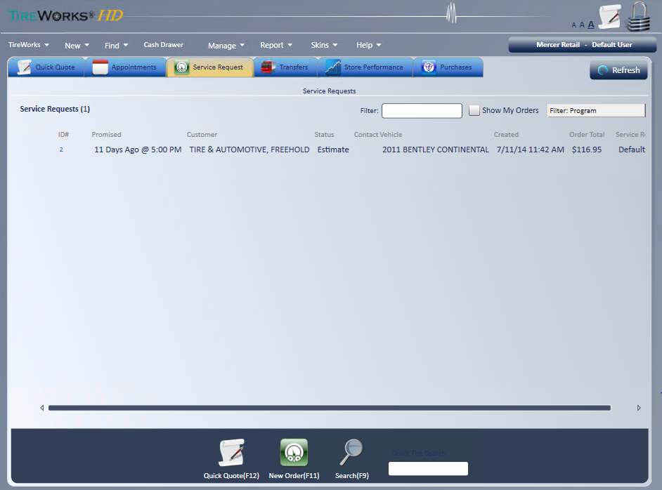
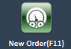
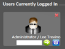

Home page
The Home page is where you start most of your work. It holds the application toolbar and tabs that list your store's quotes, appointments, orders, transfers and purchases.

Change your store
- Select the location and user button .
- A list of the stores your access rights allow appears. Select the store you want.
Application toolbar
The toolbar menus open the main areas of TireWorks HD.
- TireWorks: Current Session Info, My Preferences, Lock My Session, Change Password, Logout and Exit.
- Current Session Info: shows your login, the store you are logged into, your security profile for that store, your Windows login, the computer name and IP address, the TireWorks HD version, and memory and CPU use.
- My Preferences: opens your own user record, where you can change your Details, User Settings and Print Settings. If your store uses iPOSPays, it also has a Credit Card Terminal tab. See Electronic Payments.
- If the fields in My Preferences are grayed out, your access rights do not allow you to change them.
- Exit: exiting, or closing TireWorks HD with the X, asks "Are you sure you want to exit?" Select Yes to close.
- New: create a new Customer, Customer Deposit, Customer ROA, QuickQuote, Appointment, Service Request, Transfer, Purchase Order, Inventory Receipt, Inventory Adjustment, AP Invoice or Payroll Entry.
- You add a vehicle from the customer or the order, not from the New menu.
- Items your access rights do not allow are grayed out. Service Request does not show at all if you are not allowed to create a service request from the New menu.
- AP Invoice: See AP Invoices and Vendor Credits.
- Find: search for a Customer, Customer Deposit, Quick Quote, Appointment, Service Request (open and historical sales documents), Transfer, Purchase Order, Inventory Receipt, Inventory Adjustment, AP Invoice or ROA.
- Cash Drawer: shows total daily sales by payment method and the total transaction count. You can reconcile the drawer, produce the cash drawer reconciliation report, and manage petty cash.
- Manage: configure and manage setup information, location management, access rights, pricing, special programs and more.
- Report: Audited Events, Customer Deposit, and My Reports (the inventory, purchasing, sales and other reports your access rights allow).
- Skins: change the screen colors.
- Help: About (software version), User Manual, Video Library (training videos), and Refresh User Session. Use Refresh User Session instead of logging out and back in when someone with the access rights to do so makes changes.
Tip: Many windows also have a (?) help icon. Hover over it for a tip, and click it to open the training video for that window, where one is set up.
Home page tabs
- Quick Quote: lists all saved quick quotes, with the date created, customer, vehicle, contact information, quoted by and any comments.
- Filter to the user logged in .
- Filter by salesman, customer or quick quote number .
- Hover over a quote to text the customer or open Customer Communication. See Customer Communication (Texting).
- Appointments: an electronic appointment calendar for managing multiple service types, bays and more.
- The calendar shows one day by default. Week, month and timeline displays are also available.
- You can print calendars for a single day or a date range.
- Print all appointments or confirmed appointments only.
- The legend at the top shows what each appointment color means: Pending customer approval, Confirmed appointments, Customer is waiting, Vehicle not arrived, Vehicle dropped off, Waiting for parts, Order In Process, Order Completed, and Vehicle has been Delivered.
- An appointment that is split among multiple calendars shows (*Multi).
- Use New Appointment, Search and Print below the calendar.
- Configure Calendars: choose which of your store's calendars you see, and in what order.
- Move calendars between Available and Configured with the arrow buttons.
- Use the up and down arrows to change the display order, and then select OK.
- Your choice is saved for you at this store only.
- If Configure Calendars is missing or grayed out, your access rights do not allow it (Appointments - Configure Calendars).
- Managers set up the store's calendars at Manage; Location Setup; Calendars.
Note: If your store uses the Auto Cancel Appointments Duration setting, appointments still open that many days after the appointment date are canceled automatically when someone logs in to the store.
- Service Request: lists all open service requests, with the service request number, promised time, status, approval, service rep, customer name, vehicle, plate number, created date, contact information, order total, program, unit number, last modified date and comments.
- Show My Orders : shows only orders where you are the salesperson. You can set it to start checked in your User Settings.
- Filter by salesman, customer, order number, PO number, reference number, order comments, transfer number, unit number, vehicle (year, make, model, plate or comments), contact, or DR number .
- Filter by special program .
- Order Total shows a full circle when the order is fully paid and a half circle when it is partially paid. Hover over the circle to see the payment status.
- Approval shows whether a customer approval request is still pending. See Customer Approval.
- DOT Check: if your store uses TireMetrix TRP, type a DOT number and select Check to check it right away.
- Add, remove or reorder columns at Manage; Location Setup; Search Results Configuration (Home Screen - Service Request List).
- Inspections: lists inspections from TCS Inspect. See TCS Inspect.
- Transfers: lists all unreceived transfers, with the transfer ID, sending location, receiving location, order number, customer name, status, created date, created by and comments.
- Filter by salesman, customer or transfer number .
- Store Performance: shows a configurable report of store performance.
- Purchases: lists all unreceived purchase orders, with the PO number, vendor name, status, delivery date, user ID, date created, date completed, reference number and comments.
- Filter by vendor, user or purchase order number .
- Cycle Count: provides a daily count list based on your cycle count configuration.
- See cycle counts previously performed and processed .
Common icons
These icons appear on the Home page, on its tabs and throughout the application.
- Refreshes the Home page.
- Starts a quick quote from anywhere this icon appears.

Starts a service request from anywhere this icon appears.- Searches all document types, customers, ROAs or customer deposits.
- Quick tire search. Search by size, Mfg sku or Mfg. Abbreviation.
- Add Vehicle: shows below Quick Tire Search on the Service Request tab. Enter a vehicle to start a Quick Quote with that vehicle and open F1 Tire Lookup on its first tire fitment.
- If the plate or VIN matches an existing customer, you are asked whether to use that customer and vehicle.
- If the catalog has no tire fitments for the vehicle, "No tire fitments were found for the vehicle!" displays.
- Changes the font size of the tire search screen.
- Locks your session and displays a login window for the next user to log in.

Displays at the bottom of the login screen so you can log back in when you come back to the computer.